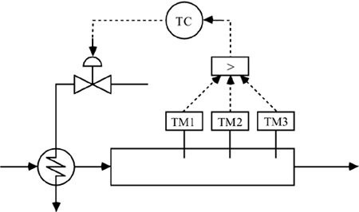
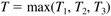
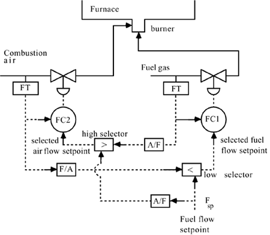

| [ Team LiB ] |
|
12.3 Selective and Override ControlOften a controller needs to select from a set of possible measurements for control. For example, consider the packed-bed reactor shown in Figure 12-2. It is important to maintain the "hot spot" temperature at a certain value to minimize catalyst degradation. In this strategy, the "high selector" (represented as the block with >) chooses the highest of three bed temperatures to send to the temperature controller. In algorithmic form, let T1, T2, and T3 represent the three temperature measurements, and T represent the temperature measurement used by the controller, then Figure 12-2. High-temperature selector for a packed-bed reactor.  When manipulating the fuel gas flow to a fired heater (furnace), it is important to make certain that a minimum air/fuel ratio is maintained. High/low selectors can be used to assure this, as shown in Figure 12-3; here the A/F boxes indicate the air/fuel ratio. To understand how this strategy works, first consider a positive change in the fuel flow setpoint. Notice that the combination of high and low selectors will force the combustion air flow rate to increase before the fuel flow increases. Also, if a decrease in fuel flow setpoint is made, the fuel flow must decrease before the combustion air flow. This strategy makes certain that excess combustion air is always available. Figure 12-3. Use of high/low selectors for fuel gas and air flow control of a fired heater. Notice the simplified representation for the air flow; ordinarily a damper inside an air duct would be adjusted to vary the air flow. In practice this strategy is just one part of the overall furnace control strategy. Usually, the fuel flow setpoint will be the output of another controller (e.g., process fluid temperature or steam system pressure), and the air/fuel ratio might be the output of a furnace stack gas O2 or CO measurement and control strategy. |
| [ Team LiB ] |
|